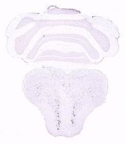
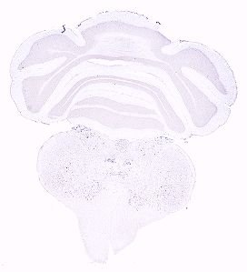
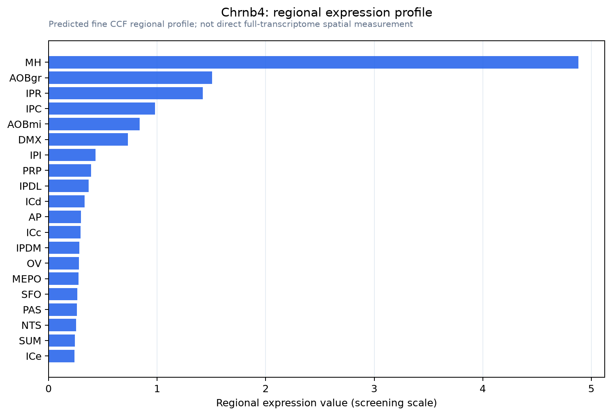

Chrnb4
Neuronal acetylcholine receptor subunit beta-4
Spatial tier: STRICT_EXCLUSIVE · Class: ION_CHANNEL · Top region: MH (Medial habenula) · Positive regions: 3/554
51.3Discovery Score
49.3Targetability Score
CEvidence grade C
What this means: Chrnb4: predicted fine-region profile is strict-exclusive, with 3 positive regions out of 554 (limit 12); direct spatial validation is required.
Function in MH: evidence, prediction, innovation
- Gene function
- Chrnb4 encodes the beta-4 subunit of neuronal nicotinic acetylcholine receptors. Beta-4 partners with alpha-3 (and alpha-5) to form alpha3beta4* cation channels that are activated by acetylcholine and nicotine; the amount of beta-4 is rate limiting for how much functional receptor a cell can assemble.
- Region function
- The medial habenula is an epithalamic relay whose cholinergic/substance P neurons project almost exclusively through the fasciculus retroflexus to the interpeduncular nucleus. This MHb-IPN axis sets nicotine aversion and withdrawal, fear memory expression, anxiety and negative affect.
- Published in this region
- direct Frahm et al. 2011 (Neuron) showed that beta4 is rate limiting for nicotinic currents in medial habenula and that Tabac mice overexpressing the human CHRNA5-A3-B4 cluster show strong nicotine aversion, which is reversed by habenular expression of the risk variant alpha5 D398N. Slimak et al. 2014 (Front Hum Neurosci) showed that habenular expression of rare CHRNB4 missense variants changes nicotine consumption. Gahring et al. 2004 (J Comp Neurol) mapped prominent beta4 immunoreactivity to medial habenula, fasciculus retroflexus and IPN.
- Predicted function
- Prediction: beta4 sets the gain of the MHb nicotine sensor, so raising beta4 increases aversion and lowering it removes the aversive brake on intake. Conditional Chrnb4 deletion restricted to MHb should abolish nicotine-evoked MHb firing, increase nicotine self-administration and reduce withdrawal-associated anxiety; virally restoring beta4 in MHb of null mice should restore aversion, making this a clean bidirectional test.
- Innovation
- ★☆☆☆☆ 1/5 Beta-4 in MHb is one of the best-established gene-region pairs in nicotine neuroscience.
- Tools
- Tabac mice carrying the human CHRNA5/A3/B4 cluster; Chrnb4 knockout mice; beta4-GFP subunit knock-in lines (Drenan lab); Chrnb4 promoter-driven habenula-targeting constructs used by Frahm 2011; alpha-conotoxin AuIB; anti-beta4 antibodies.
- References
Direct evidence located at the region
No Allen ISH section could be located at this region's centroid for the recorded experiments.
Look it up yourself: Allen Mouse Brain ISH for Chrnb4Allen reference atlas: MH (structure 483)ABC Atlas MERFISH viewer(in the ABC Atlas choose dataset MERFISH-C57BL6J-638850-CCF, colour cells by gene "Chrnb4" or by parcellation_substructure "MH")All genes confined to MH + 3-D brain
Direct spatial evidence
MERFISH REGION LOCATOR

DIRECT ALLEN ISH

DIRECT ALLEN ISH

Regional expression figure

Predicted WMB × fine-CCF profile; not direct full-transcriptome spatial measurement.
Spatial profile
Evidence and specificity
- Evidence status
- PREDICTED_FINE
- Direct sources
- None; predicted localization only
- Exclusive threshold
- 12 positive regions out of 554
- Spatial specificity
- 0.460
- Top-region fraction
- 0.262
- Filter status
- PASS
Interpretation limits
- Cell-type-to-region projection is imputed expression, not direct spatial measurement.
- Adult reference atlases do not establish stability across age, sex, strain, state, or disease.
- Transcript abundance does not guarantee protein abundance or genetic-tool performance.